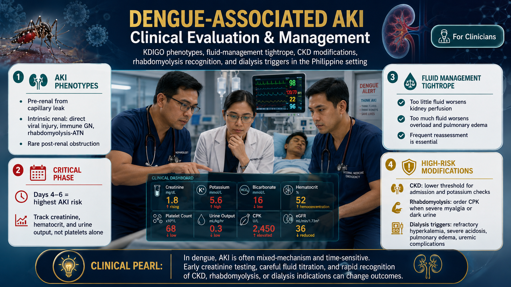

What Is Dengue-Associated AKI?Ano ang Dengue-Associated AKI?Unsa ang Dengue-Associated AKI?Nano ing Dengue-Associated AKI?


"You were told to watch your platelet count. Nobody told you to watch your creatinine.""Sinabihan kang bantayan ang iyong platelet count. Walang nagsabi sa iyo na bantayan ang iyong creatinine.""Gisultihan ka nga bantayan ang imong platelet count. Walay nagsulti kanimo nga bantayan ang imong creatinine.""Sinabihan ka nang bantayan ing platelet count mu. Wala naming nagsabi sa iyo na bantayan ing creatinine mu."
Dengue is the most common mosquito-borne viral illness in the Philippines — the DOH (Department of Health) records 100,000–200,000 cases annually. Globally, dengue is present in more than 100 countries, with Asia accounting for over 70% of cases (WHO); due to climate change, the Aedes mosquito is now spreading to new regions, including autochthonous clusters in Europe. Most patients, families, and even some clinicians have been conditioned to track one number: the platelet count. But your kidneys are a primary target organ in dengue, and acute kidney injury (AKI) occurs in approximately 8% of dengue hospitalizations (pooled estimate, 2024 systematic review — Kidney Int 2026). Among those who develop AKI, 3–14% require dialysis support. It is a distinct, underappreciated complication that can be life-threatening — and in CKD patients, it is even more dangerous.Ang dengue ang pinaka-karaniwang sakit na viral na dala ng lamok sa Pilipinas — ang DOH ay nagtatala ng 100,000–200,000 kaso bawat taon. Karamihan sa mga pasyente, pamilya, at maging ilang klinisyan ay nasanay na subaybayan ang isang numero: ang platelet count. Ngunit ang iyong mga bato ay isang pangunahing target organ sa dengue, at ang acute kidney injury (AKI) ay nangyayari sa hanggang 8–15% ng mga hospitalisasyon sa dengue. Ito ay isang natatanging, hindi gaanong napapansin na komplikasyon na maaaring magbanta sa buhay — at sa mga pasyenteng may CKD, ito ay mas mapanganib pa.Ang dengue ang labing kasagarang viral nga sakit nga gidala sa lamok sa Pilipinas — ang DOH nagrekord og 100,000–200,000 ka kaso matag tuig. Kadaghanan sa mga pasyente, pamilya, ug bisan ang pipila ka klinisyan nasanay na sa pagsunod sa usa ka numero: ang platelet count. Apan ang imong mga bato usa ka panguna nga target organ sa dengue, ug ang acute kidney injury (AKI) mahitabo sa hangtud 8–15% sa mga hospitalisasyon sa dengue. Kini usa ka natatanging, dili gaano gimatikdan nga komplikasyon nga mahimong magbanta sa kinabuhi — ug sa mga pasyente nga adunay CKD, kini mas delikado pa.Ing dengue ing pinaka-karaniwang viral a sakit a dala ning lamok king Pilipinas — ang DOH nagtatalas ning 100,000–200,000 a kaso bawat taon. Karamihan king mga pasyente, pamilya, at maging ilang klinisyan nasanay nang subaybayan ing metung a numero: ing platelet count. Ngem ing mga bato mu pangunahing target organ sa dengue, at ing acute kidney injury (AKI) nangyayari sa hanggang 8–15% ning mga hospitalisasyon sa dengue. Iti metung a natatanging, hindi gaanong napapansin a komplikasyon a malyaring magbanta king buhay — at king mga pasyenteng may CKD, iti mas mapanganib pa.

Acute kidney injury means the kidneys suddenly lose their ability to filter waste from the blood. In dengue, this happens through multiple separate pathways — not just one. Understanding these pathways helps explain why dengue AKI can present differently in different patients, why it is so easy to miss, and why the usual fever remedies Filipino families reach for can make kidney damage dramatically worse.Ang acute kidney injury ay nangangahulugang biglang nawawalan ng kakayahan ang mga bato na salain ang basura mula sa dugo. Sa dengue, nangyayari ito sa pamamagitan ng apat na magkahiwalay na landas — hindi lang isa. Ang pag-unawa sa mga landas na ito ay tumutulong na ipaliwanag kung bakit ang dengue AKI ay maaaring magpakita nang iba-iba sa iba't ibang pasyente, kung bakit napakadaling mapansin, at kung bakit ang karaniwang mga lunas sa lagnat na pinipili ng mga Filipino na pamilya ay maaaring gumawa ng pinsala sa bato nang mas malala.Ang acute kidney injury nagkahulogan nga sa kalit nawad-an sa kakayahan ang mga bato nga salain ang basura gikan sa dugo. Sa dengue, kini mahitabo pinaagi sa upat ka magkahiwalay nga agianan — dili usa lamang. Ang pagsabot niining mga agianan nagtabang sa pagpasabot kon ngano ang dengue AKI mahimong magpakita sa lain-laing paagi sa lain-laing pasyente, kon ngano kini sayon nga mapanid, ug kon ngano ang kasagarang mga tambal sa hilanat nga giawas sa mga Filipino nga pamilya mahimong mas grabe ang kadaot sa bato.Ing acute kidney injury nangangahulugang biglaang nawawalan ning kakayahan ing mga bato na salain ing basura bunga ning dugu. Sa dengue, nangyayari iti sa pamamagitan ning apat a magkahiwalay a landas — hindi la isa. Ing pag-unawa king mga landas na iti tumutulong na ipaliwanag kung bakit ing dengue AKI malyaring magpakita nang iba-iba king iba't ibang pasyente, kung bakit napakadaling mapanid, at kung bakit ing karaniwang mga lunas king lagnat a pinipili ning mga Filipino a pamilya malyaring gumawa ning pinsala king bato nang mas malala.
The most dangerous home remedy in dengue feverAng pinaka-mapanganib na lunas sa bahay sa dengue feverAng pinaka-delikado nga tambal sa balay sa dengue feverIng pinaka-mapanganib a lunas king bahay sa dengue fever
Mefenamic acid (Ponstan, Dolfenal) is the most commonly self-administered fever reducer in the Philippines. In dengue, it is contraindicated. It reduces blood flow to the kidneys at exactly the moment when dengue is already impairing kidney perfusion — and it dramatically increases the risk of serious bleeding. Paracetamol (Biogesic, Tempra, Tylenol) is the only safe fever reducer in dengue.ang pinaka-karaniwang sariling inaabotang pampababa ng lagnat sa Pilipinas. Sa dengue, ito ay kontraindikado. Binabawasan nito ang daloy ng dugo sa mga bato sa eksaktong sandali kapag ang dengue ay nagpapahina na ng perfusion ng bato — at dramatikong dinadagdagan nito ang panganib ng malubhang pagdurugo. Ang Paracetamol (Biogesic, Tempra, Tylenol) ang tanging ligtas na pampababa ng lagnat sa dengue.ang labing kasagarang sariling gikuhang pampababa sa hilanat sa Pilipinas. Sa dengue, kini kontraindikado. Kini nagpababa sa agos sa dugo sa mga bato sa eksaktong higayon kon ang dengue nagpahinay na sa perfusion sa bato — ug dramatikong nagpadako sa risgo sa grabe nga pagdugo. Ang Paracetamol (Biogesic, Tempra, Tylenol) ang tanging luwas nga pampababa sa hilanat sa dengue.ing pinaka-karaniwang sariling iniinom a pampababa ning lagnat king Pilipinas. Sa dengue, iti kontraindikado. Binabawasan niti ing daloy ning dugu king mga bato sa eksaktong sandali nung ing dengue nagpapahina na ning perfusion ning bato — at dramatikong dinadagdagan niti ing panganib ning malubhang pagdurugo. Ing Paracetamol (Biogesic, Tempra, Tylenol) ing tanging ligtas a pampababa ning lagnat sa dengue.